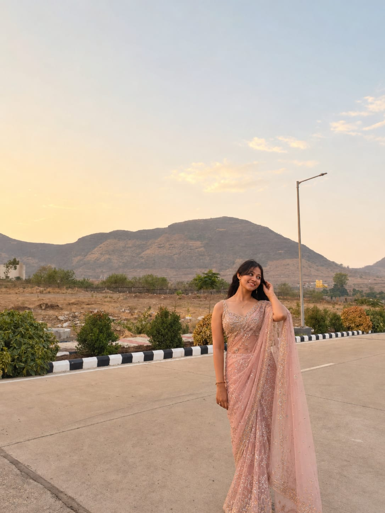
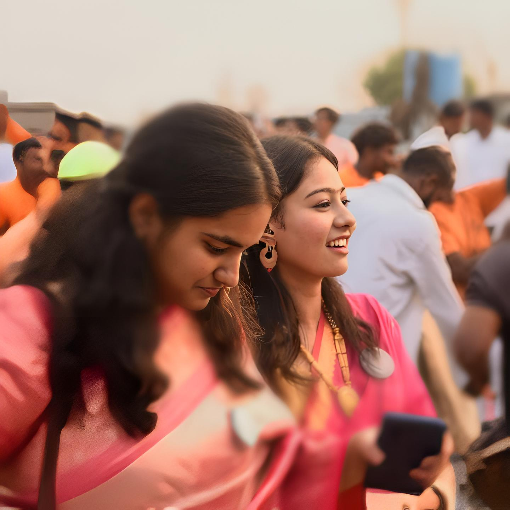
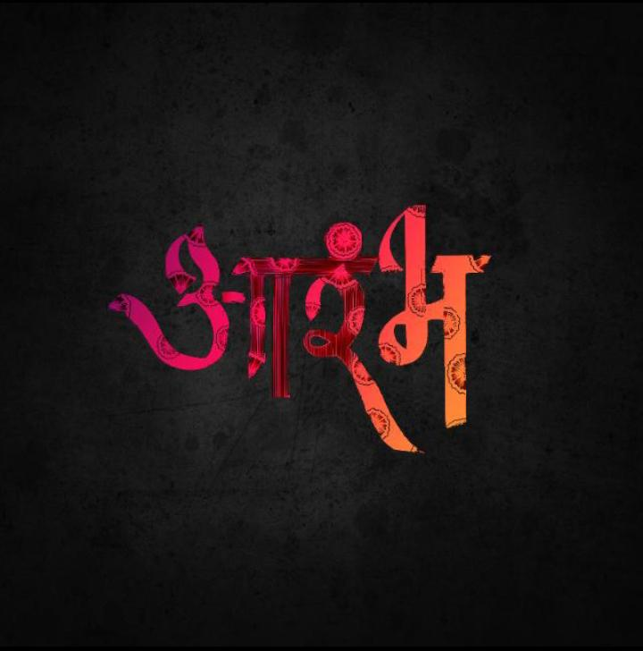
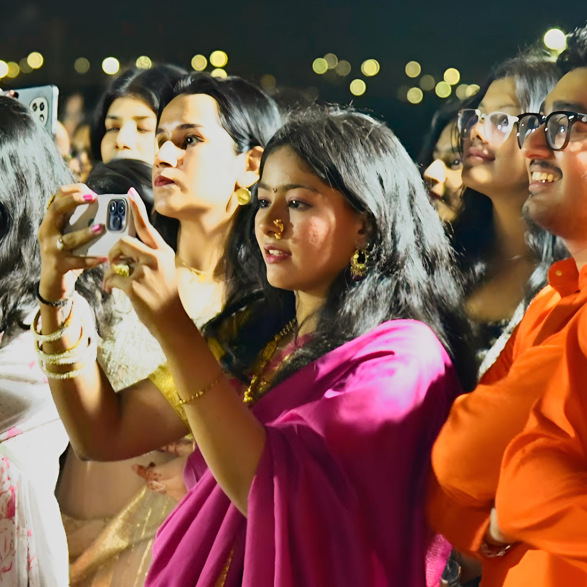
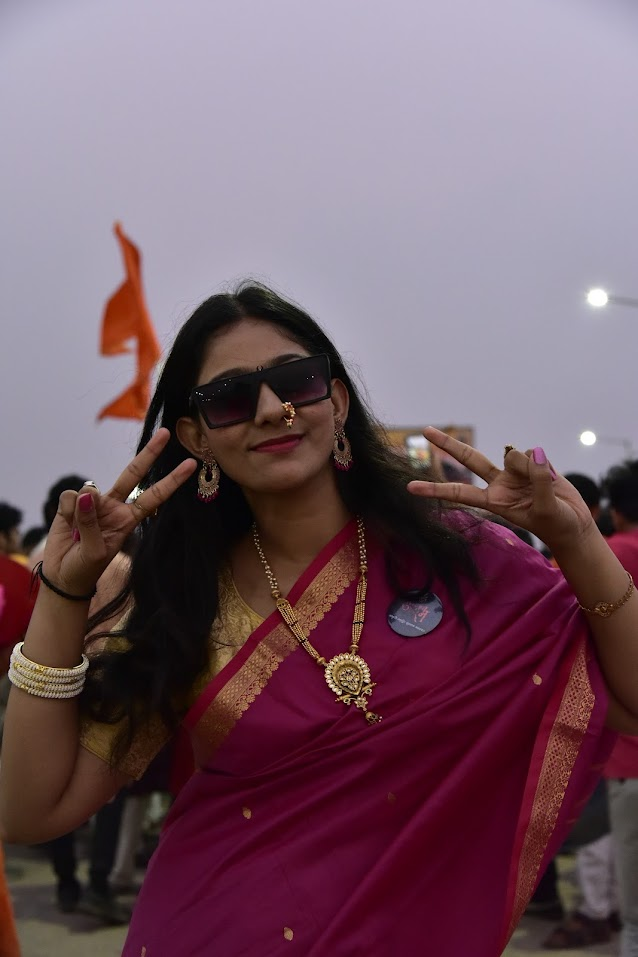

Where it all began
Lets start with my one of the favorite pic of yours this one ....
And seriously isme tu patli and bohot hot dikh rhi he 😉

I saw u in shivajayanti for the first time and you were looking "Assal marathmoli mulgi" 🔥 I know itni marathi nahi ati search kr lena badme ....
I may lied to u but i liked u first time I saw u 🫠

UKW? first time i saw u in aarambh and we both can't deny aarambh is also imp factor between us to make things began

The energy wasn’t loud… but it was real.

And ye thodasa chapari photo among the all best pics 😂😜
Actually mene bohot stalk mara fir jakr ye photo mila
Still looking cute 🥰
